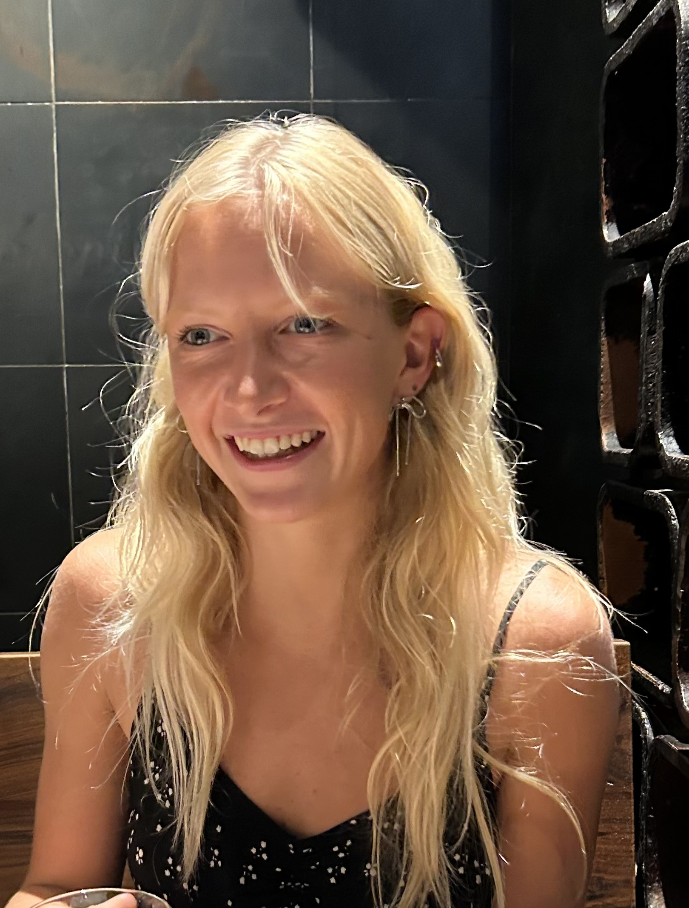

Georgia State University · Class of 2026
Music Industry Professional
I study Music Industry with a concentration in Management at Georgia State University, with a focus on sync licensing, publishing, and music supervision — the work that puts music on screen and keeps it earning. Currently completing a sync licensing senior capstone at Dust-to-Digital while competing as a Division I student-athlete with a 3.92 GPA.

EGAdd your photo as
photo.jpg
I'm a graduating senior at Georgia State University's College of the Arts, studying Music Industry with a concentration in Management, with a focus on sync licensing, publishing, and the business mechanics behind how music finds its audience. I'm completing my degree in May 2026 with a 3.92 GPA and a full Division I athletic scholarship — and real, substantive experience inside an independent label.
For the past year, I've been embedded as an industry mentee at Dust-to-Digital, a respected independent label and archival imprint based in Atlanta. My work spans sync licensing strategy, operational systems development, and strategic analysis — including spearheading the company's first-ever catalogue build on DISCO as my senior capstone project. What makes this work uniquely challenging is the nature of Dust-to-Digital's catalogue: the label specialises in traditional, historical, and largely public domain recordings. This demands extensive and meticulous research — tracing the origins and rights status of each song, determining public domain eligibility, and preparing each track accurately for placement. That work has required developing real fluency in rights administration, metadata standards, and what it actually takes to position a catalogue competitively for placement opportunities.
Beyond the DISCO project, I've built internal operations documentation to help the label scale, conducted strategic analyses of their online presence and physical release revenue, and supported content production from the 2025 Big Ears Festival. Before Dust-to-Digital, I interned at Music Box in San Diego — managing digital event listings across major ticketing platforms and creating promotional content that drove real audience engagement.
Behind all of it is four years as a Division I student-athlete. Competing at the collegiate level while holding near-perfect grades shaped how I approach every professional challenge: with composure, precision, and a genuine understanding of what it means to perform as part of a team.
For my senior capstone at Georgia State University, I partnered with Dust-to-Digital to lead the label's first-ever entry into sync licensing. The project centers on building a comprehensive music catalogue on DISCO — the industry's leading platform for music placement in film, television, advertising, and other media. The initial album in the catalogue is recorded by David Evans — a celebrated ethnomusicologist, blues musician, and one of America's foremost documentarians of African American roots music traditions — and I am working directly with him throughout this process.
What makes this project particularly demanding — and unique — is the nature of Dust-to-Digital's catalogue. The label specialises in traditional, historical, and largely public domain recordings, which requires deep and methodical research that most sync projects never encounter: tracing song origins across decades, verifying rights status, determining public domain eligibility, and accurately preparing each track for placement. There are no shortcuts and no templates. Beyond the research, the project has required developing fluency in rights administration, metadata tagging standards, and sync licensing strategy — learning firsthand what music supervisors look for when clearing tracks and how to position an independent catalogue competitively in this market.
In a landscape where physical music sales are declining, sync represents one of the most meaningful growth revenue streams for independent labels. This project is about more than a class requirement — it's about positioning Dust-to-Digital for real, sustainable income from a catalogue they've spent decades building.
Open to roles in sync licensing, music publishing, and music supervision — and the broader music business. Graduating May 2026. Based in Atlanta — open to relocating.